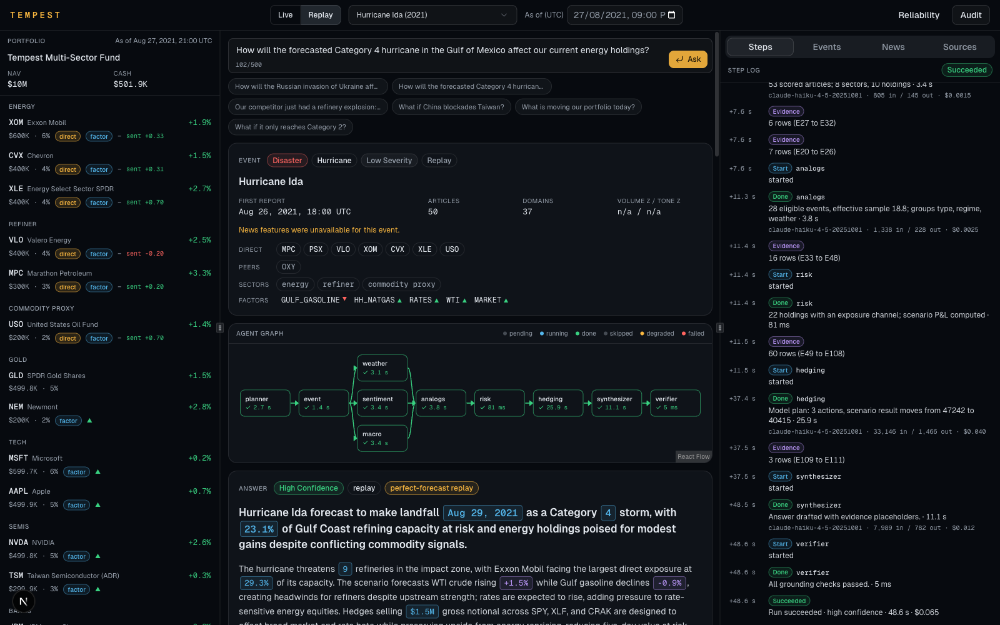

A war, a tariff package, a surprise rate decision, a competitor's refinery explosion, a Category 4 hurricane in the Gulf. A portfolio manager needs three answers in minutes, and needs to trust every number in them.

TypeScript monorepo: Next.js terminal, Express + tRPC with SSE streaming, Drizzle + Postgres, Redis, Pinecone, Claude.
| Model | Directional accuracy | MAE (5-day) |
|---|---|---|
| Same event type | 61.4% | 5.78% |
| Market regime (VIX) | 56.6% | 5.22% |
| Combined | 52.4% | 5.23% |
| Unconditional mean | 49.3% | 5.49% |
Small samples (3 to 31 events per type) and hand-picked events; news features were unavailable on our network, so the news model has no predictions. The reliability page shows every table.
From an event to exposure, analogs, risk and a hedge, in under a minute, with every claim traceable.